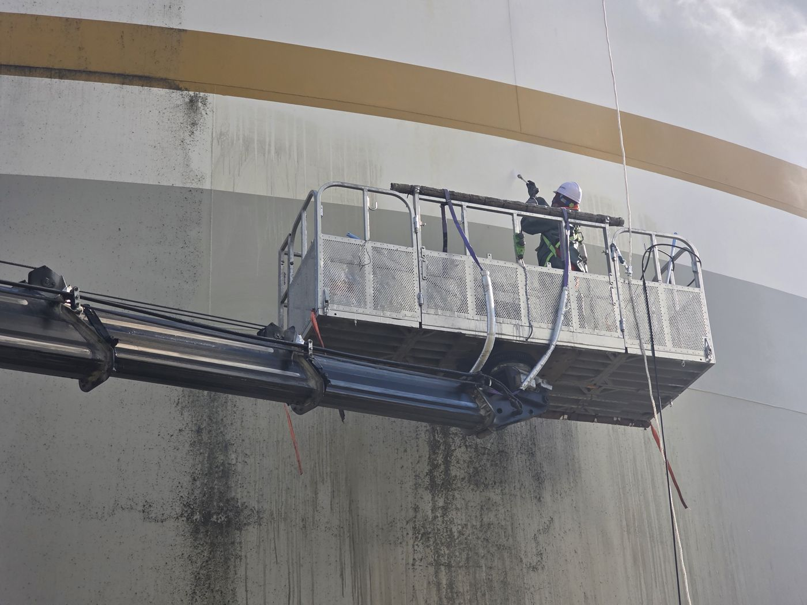
빗물 자국과 흘림 얼룩
창틀과 이음부를 타고 내린 빗물이 검은 줄을 남깁니다. 시간이 지날수록 자국이 표면에 배어 일반 세척으로는 지워지지 않습니다.
공장 외벽, 저장탱크, 건물 패널과 유리를 스카이 3.5톤·5톤·7톤과 자일로프공·PP로프공 작업으로 세척합니다.
임실은 치즈·유가공 공장과 오수 일대 축산·육가공 시설이 있는 지역입니다. 유가공 냉장실은 위생 기준이 엄격해 정기 세척 수요가 있습니다.
높은 곳의 오염은 아래에서 올려다볼 때보다 가까이서 보면 훨씬 심합니다. 임실 현장에서도 스카이를 올려 확인하고 나서야 범위를 다시 잡는 일이 있습니다.
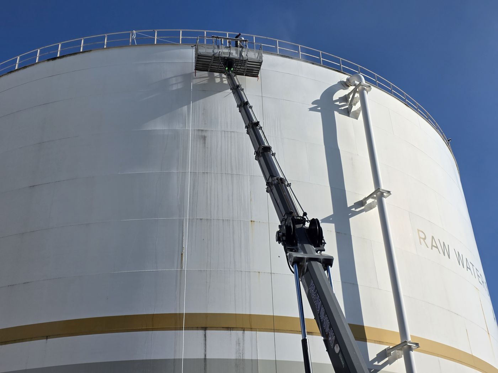
임실 현장은 전주점이 맡습니다. 면적이 넓거나 고층인 현장은 서산 본사 팀이 합류해 장비를 늘려 공기를 줄입니다.

창틀과 이음부를 타고 내린 빗물이 검은 줄을 남깁니다. 시간이 지날수록 자국이 표면에 배어 일반 세척으로는 지워지지 않습니다.
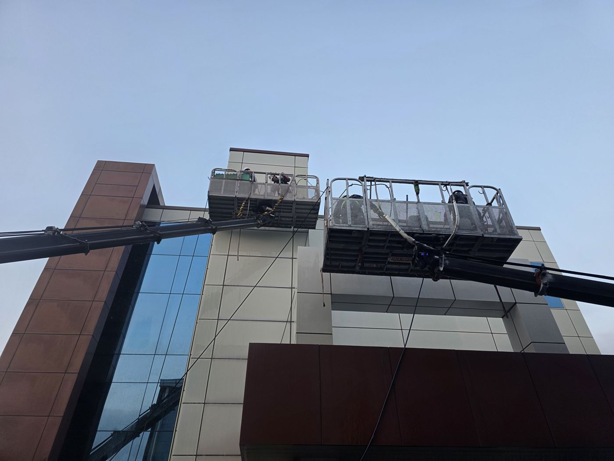
재도장을 앞두고 있다면 세척이 먼저입니다. 오염 위에 칠하면 도막이 붙지 않고 금방 벗겨집니다.
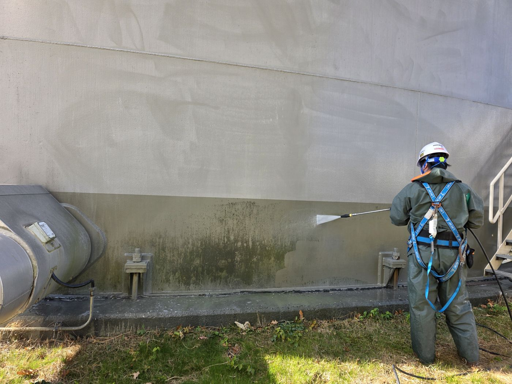
유리면 물때와 프레임 틈의 분진은 건물 전체 인상을 좌우합니다. 유리는 세척 방법이 달라 따로 다룹니다.
탱크는 상부 난간과 계단 주변에 오염이 몰립니다. 이 구간을 따로 잡아야 견적이 정확해집니다.
보정 없이 촬영한 현장 사진입니다.
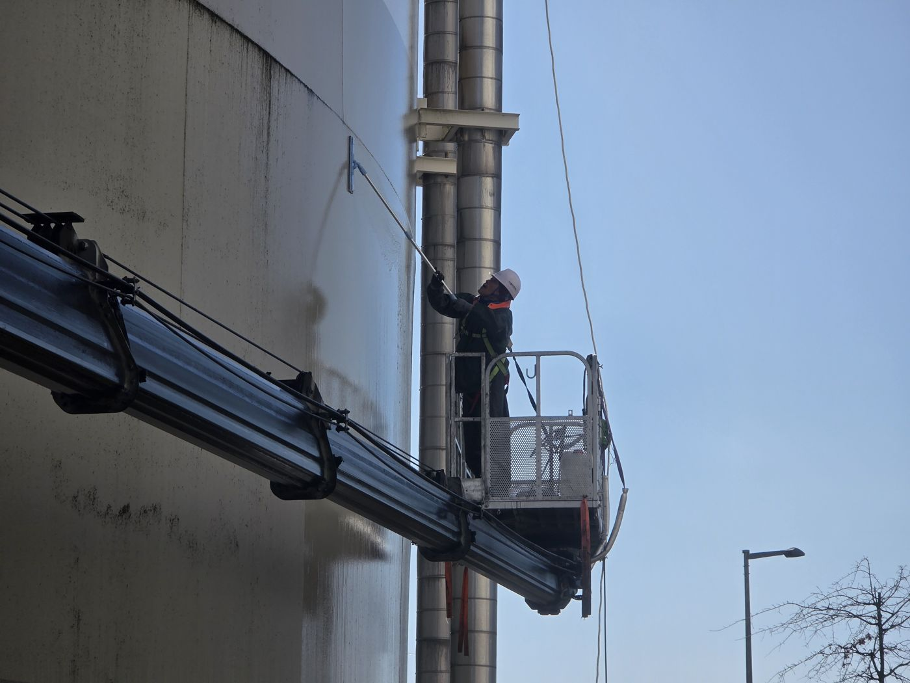
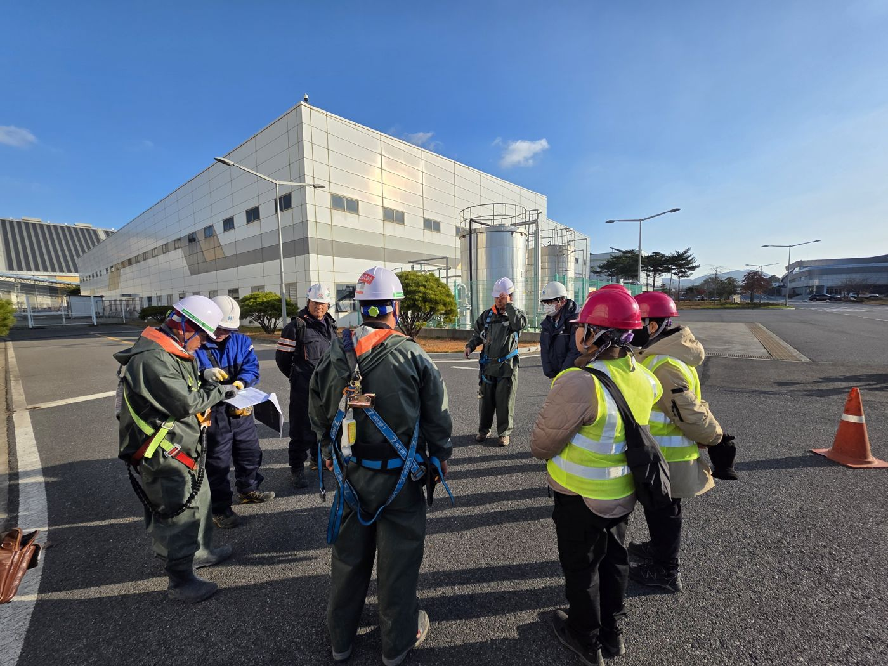
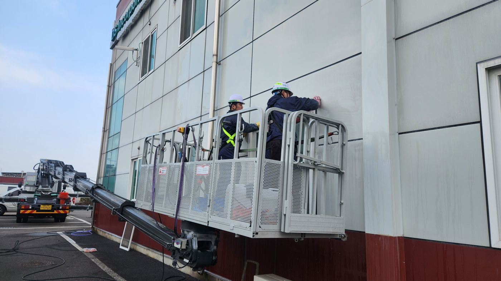
임실 현장도 같은 절차로 진행하며, 현장 조건에 따라 장비와 보양 범위를 조정합니다.
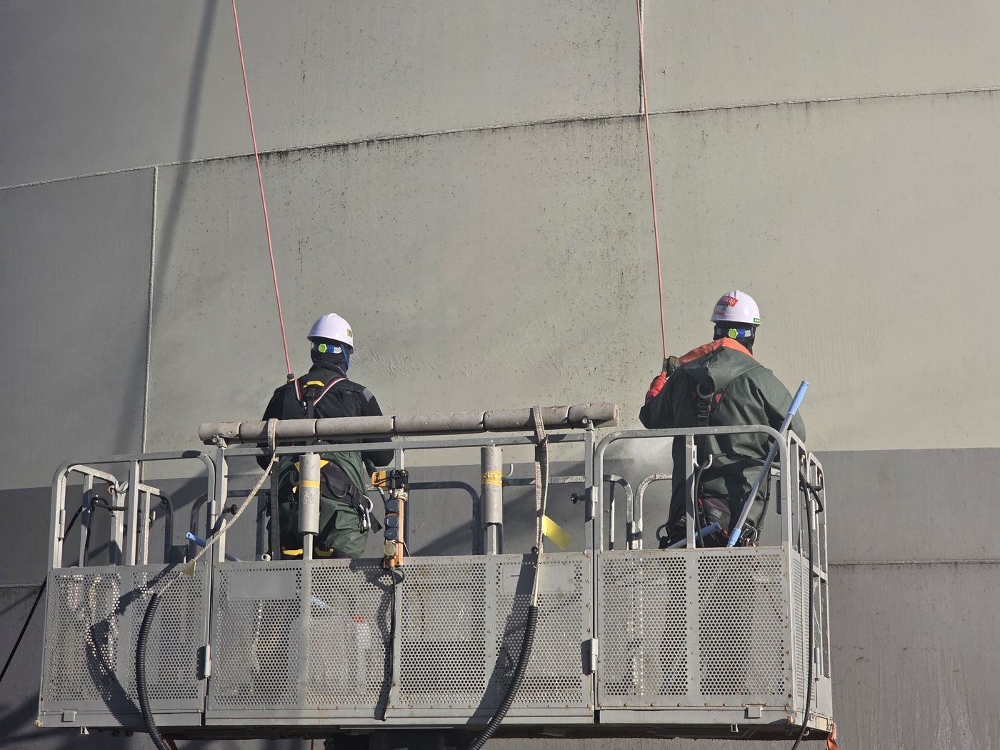
작업 전 전 인원이 모여 작업 범위와 위험 요인을 공유합니다. 안전대와 헬멧 착용 상태를 서로 점검합니다.
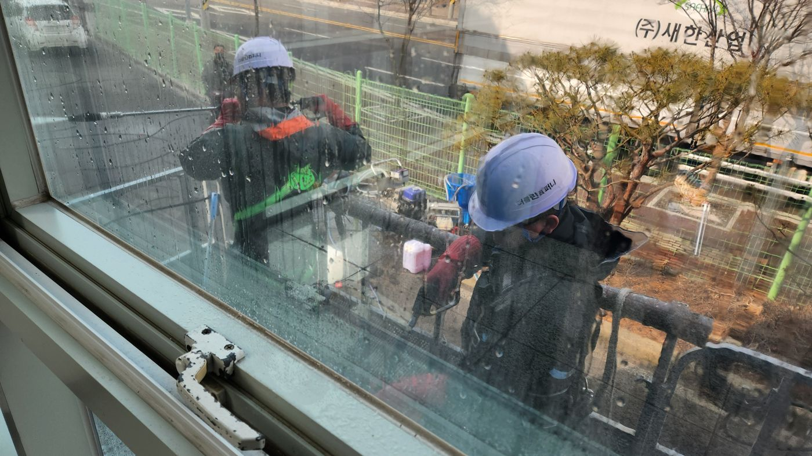
건물 높이와 지반 상태에 따라 스카이 3.5톤·5톤·7톤 중 적합한 장비를 배치합니다. 아웃트리거 지지면을 확인합니다.
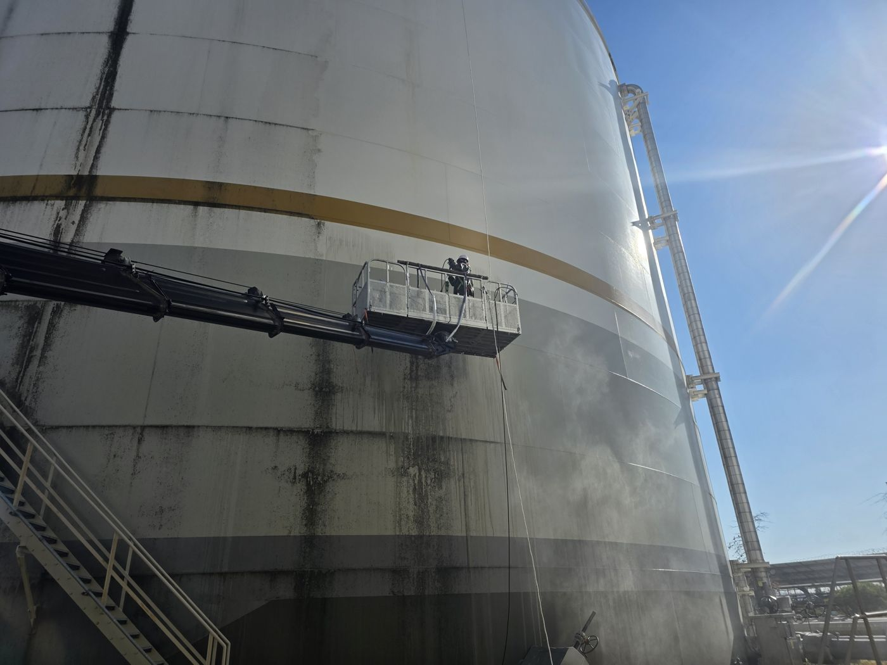
창호, 전기 설비, 주차 차량, 조경에 물이 튀지 않도록 덮습니다.
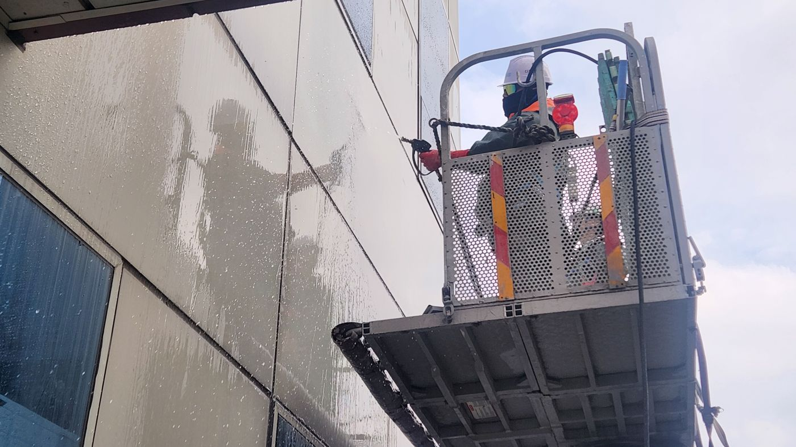
오염이 아래로 흐르므로 위에서부터 순차로 씻어 내립니다. 마감재에 맞춰 압력을 조절합니다.
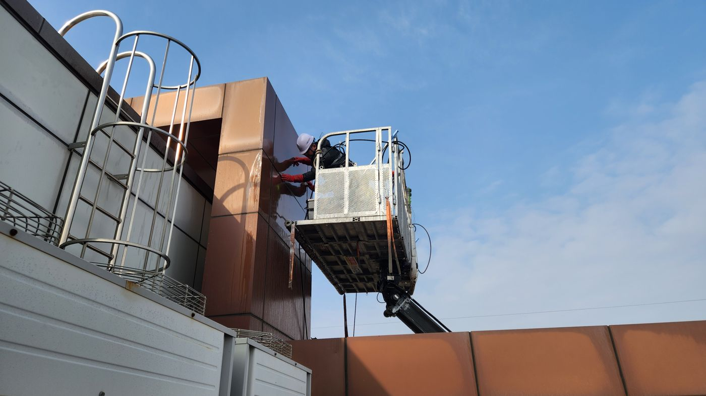
세척면을 아래에서 다시 확인하고 남은 얼룩을 처리합니다. 배수구 주변과 바닥을 정리합니다.
전북 임실군에서 저희가 주로 만나는 현장은 치즈·유가공과 축산·육가공입니다. 치즈 숙성·보관 냉장실, 유가공 공장 원료 창고, 그리고 오수 일대 축산물 냉동창고, 육가공 공장가 대표적입니다. 서해안 평야 지대라 농산물 저장 물량이 가을에 몰립니다.
임실에서 상담이 들어오면 현장 사진 몇 장을 먼저 받습니다. 높이와 접근 조건만 확인돼도 견적 범위가 좁혀집니다.
임실읍 · 청웅면 · 운암면 · 신평면 · 성수면 · 오수면 등 임실 전역으로 출장합니다. 인접한 전주 · 남원 · 순창 · 완주 현장도 전주점이 함께 관리하고 있어, 가까운 현장을 묶어 일정을 잡으면 이동 비용을 줄일 수 있습니다.
임실 일정은 보통 현장 확인 후 1~2주 안에 잡힙니다. 급한 현장은 우선 배정해 드립니다.
현장을 보지 않고 금액부터 말씀드리지 않습니다. 눈으로 확인한 뒤에야 정확한 견적이 나옵니다.
완료 보고서에는 작업 일자, 범위, 투입 인원, 전후 사진이 들어갑니다. 위생 점검 대비 자료로 쓰시는 현장이 많습니다.
작업 구역 아래는 출입을 통제합니다. 통행이 잦은 현장은 유도 인원을 따로 둡니다.
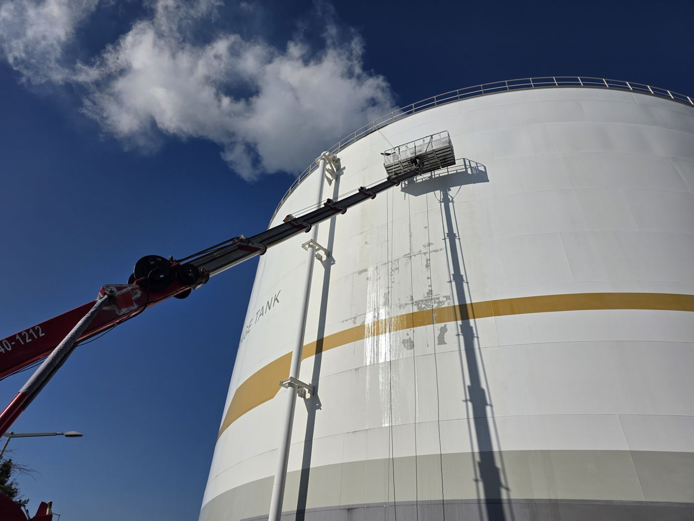
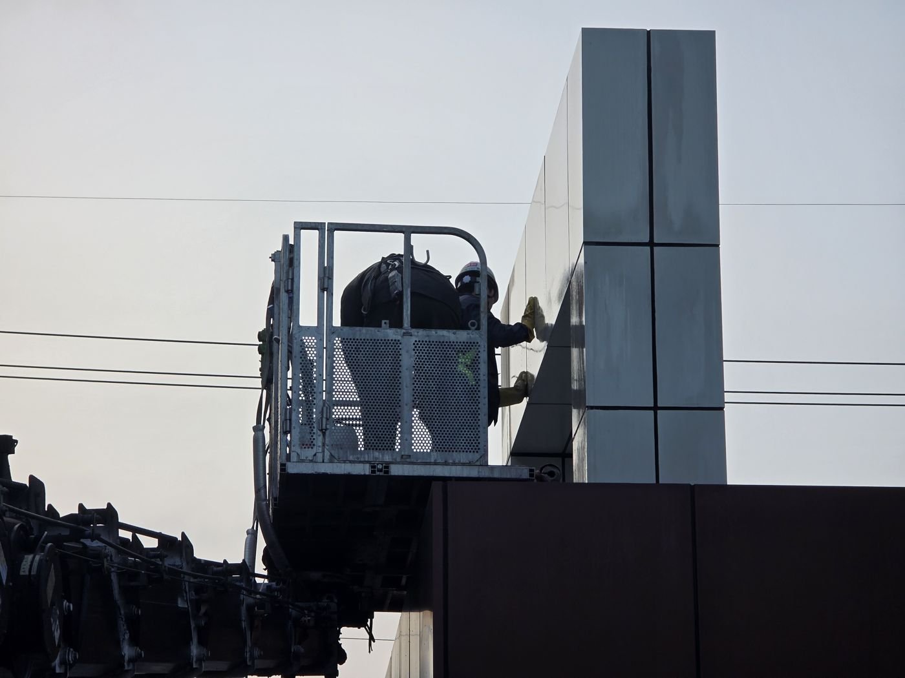
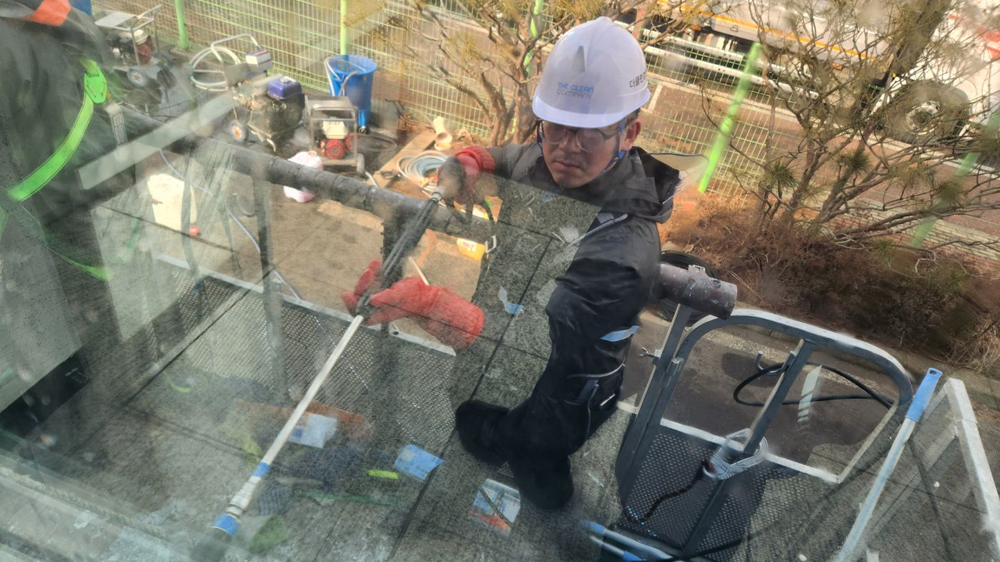
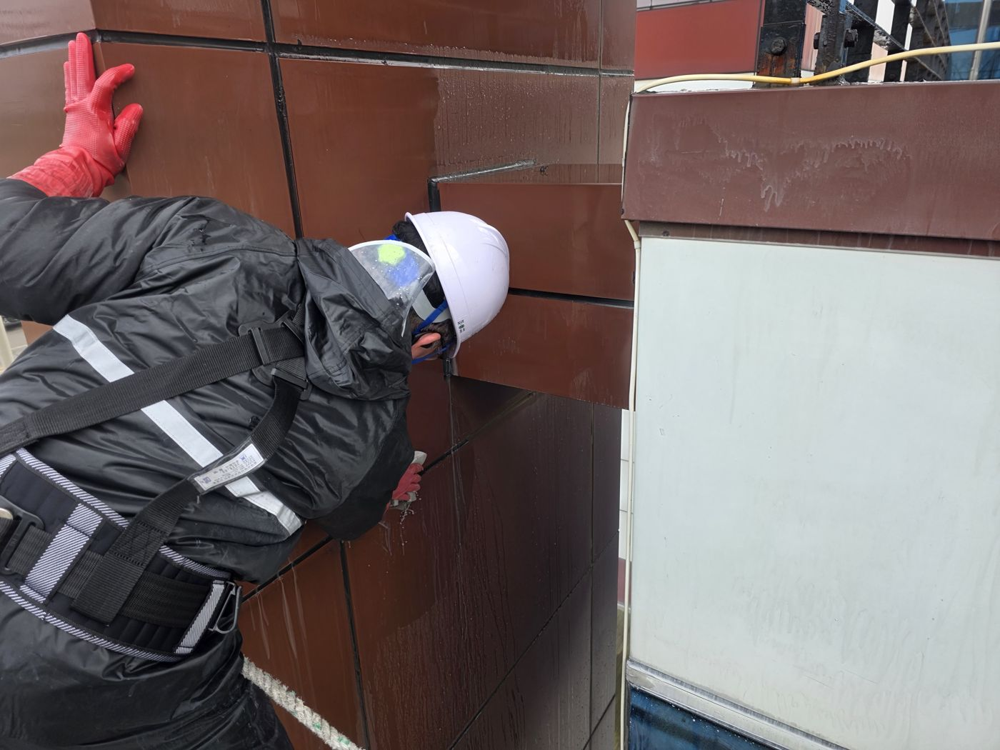
더클린컴퍼니 전주점이 담당합니다. 전국 12개 지점은 지사장이 직접 현장에 서는 직영제로 운영되고, 접수는 대표번호 1551-1559 하나로 받아 담당 지점에 바로 연결합니다.
면적, 높이, 마감재 종류, 오염 정도, 장비 접근성에 따라 정해집니다. 건물 사진과 층수를 보내주시면 개략 견적이 빨라집니다.
마감재 속까지 배어든 오염이나 도막이 벗겨진 부분은 세척만으로 원상 복구가 어렵습니다. 현장 확인 시 어디까지 가능한지 먼저 말씀드립니다.
알루미늄 복합패널, 도장 강판, 콘크리트, 유리는 각각 압력과 노즐을 다르게 씁니다. 작업 전 눈에 잘 안 띄는 곳에서 먼저 시험합니다.
작업 구간 아래는 사전에 보양하고 차량 이동을 요청드립니다. 창호와 전기 설비도 덮은 뒤 시작합니다.